by Samia A. Halaby
These pieces are made of acrylic on canvas with some paper collaged onto the canvas. The is cut and stitched and glued with acrylic medium.
1..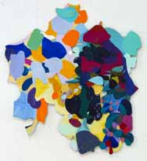
1. No. 558 �Kisses and Grapes� 2003.
Acrylic on canvas, 22.5 x 20.25�, 57 x 51.5 cm.
2...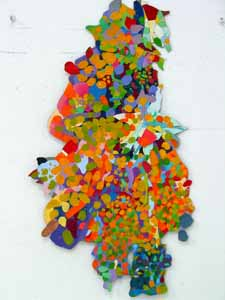
2. No. 565 �Village Dance: The Woman� 2003.
acrylic and paper on canvas, 33 x 19�, 84 x 48 cm.
3...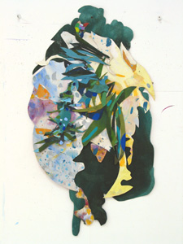
3. No. 568 �Autumn Yellow and Evergreen� 2003.
Acrylic on canvas, 38.5 x 21.5�, 98 x 54.5cm,
4..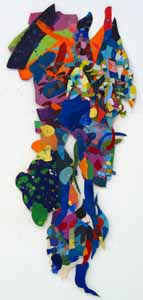
4. No. 569 �Dancing Man� 2003.
Acrylic and paper on canvas, 39 x 17�, 99 x 43 cm.
5...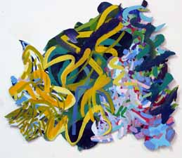
5. No. 573 �Yellow Calligraphy� 2003.
Acrylic on canvas, 25.75 x 29�, 65.5 x 73.5 cm.
6..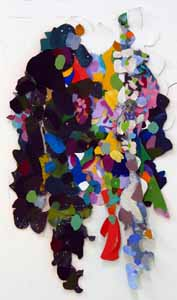
6. No. 576 �Little Palestine� 2003.
Acrylic on canvas, 46 x 27�, 117 x 68.5 cm.
7..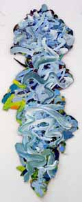
7. No. 580 �An Arabesque of Trees� 2003.
Acrylic and paper on canvas, 53.75 x 21.5�, 136.5 x 54.5cm.
8...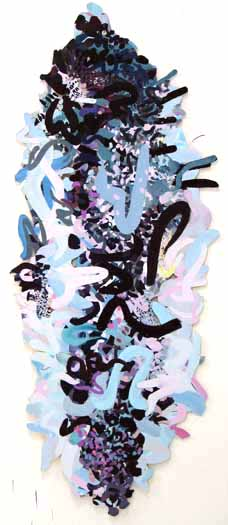
8. No. 581 �Cypress in My Grandmother�s Garden� 2004.
Acrylic on canvas, 70 x 28.25�, 179 x 72 cm.
9...
9. No. 582 �Her Garden in Al Quds� 2004.
Acrylic on canvas, 51.5 x 31.5�, 131 x 80 cm.
10..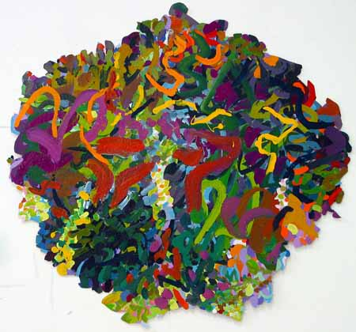
10. No. 583 �Sumptuous Greens� 2004.
Acrylic on canvas, 32 x 42�, 81 x 107 cm.
11..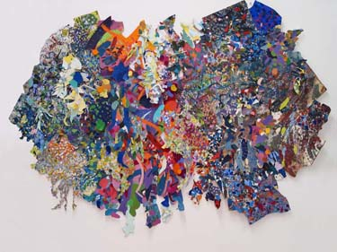
11.. No. 553 "Bride," 2004.
Acrylic and paper on canvas, 58 x 68 inches, 147 x 170 cm.
12..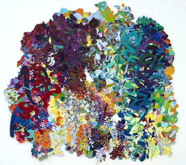
12.. No. 577 "Demolish the Wall, Let Life Be Fertile," 2004.
Acrylic and paper on linen, 56 x 59", 140 x 150 cm.
13..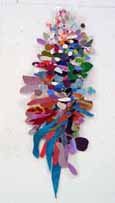
13.. No. 587 �Tree� 2004.
Acrylic on paper and vinyl on canvas, 19 x 7.5�, 48.25 x 19 cm.
14...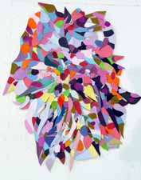
14.. No. 588 �Pink Bride� 2004.
Acrylic on canvas, 17.5 x 14.75�, 44.5 x 37 cm.
15...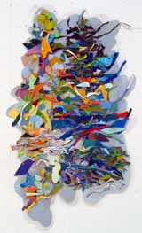
15.. No. 589 �The Mediterranean Coast of Palestine� 2004.
Acrylic on canvas with vinyl, 24 x 14�, 61 x 35.5 cm.
16..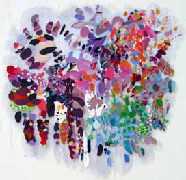
16.. No. 590 �Big Transparent� 2004.
Acrylic on paper on Vinyl, 29 x 30.75�, 73.5 x 78 cm.
17...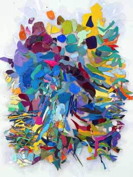
17.. No. 591 �Mountain to Mediterranean� 2004.
Acrylic on canvas on vinyl, 25 x 19.5�, 63.5 x 49.5 cm.
18..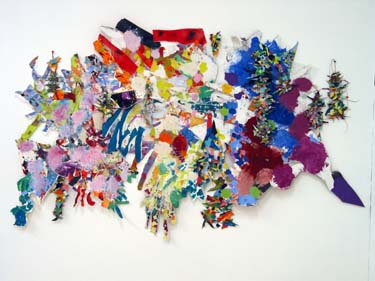
18.. No. 555 �Three Dancers Flying Through the Trees Like Storms in Spring," 2004
acrylic and paper on canvas, 48 x 77�, 122 x 200 cm.
19..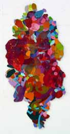
19.. No. 593 �Little Red One� 2004.
Acrylic on canvas, 25 x 12�, 63.5 x 30.5 cm.
20...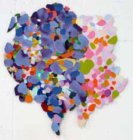
20.. No. 594 �Light in Your Heart� 2004.
Acrylic on canvas, 18 x 15�, 46 x 38 cm.
21...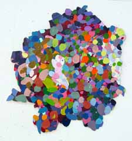
21.. No. 595 �Dark Little Corner of Precious Color Hidden in a Garden� 2004, Acrylic on canvas, 14.36 x 13�, 36.5 x 33 cm.
22..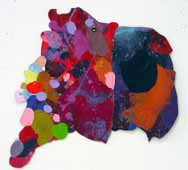
22.. No. 596 �City Textures� 2004.
Acrylic on canvas, 11 x 10�, 28 x 25.5 cm.
23...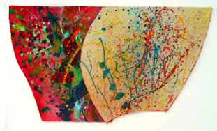
23.. No. 597 �Walls, Air, Trees� 2004.
Acrylic on canvas, 19 x 32.75�, 48.25 x 83 cm.
24...
24.. No. 598 �Summer Shadows on Green Walls� 2004.
Acrylic on canvas, 15 x 29.5�, 38 x 75 cm.
25...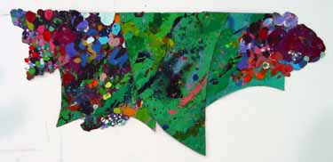
25.. No. 599 �Green Embrace� 2004.
Acrylic on canvas, 21 x 46�, 53 x 117 cm.
26...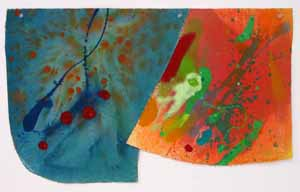
26.. No. 600 �Carrie� 2004.
Acrylic on canvas, 18.62 x 30.3�, 47.25 x 77 cm.
27...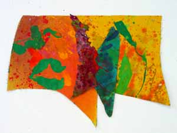
27.. No. 601 �Green Kiss� 2004.
Acrylic on canvas, 21.25 x 28.5�, 54 x 72 cm.
28...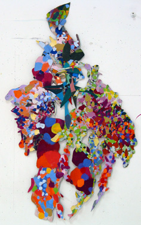
28.. No. 602 �Bride and Child� 2003.
Acrylic on canvas, 32 x 19.5�, 81.25 x 49.5 cm.
29...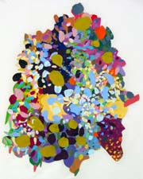
29.. No. D1870 Untitle, 2004.
Acrylic on paper collage on Polyester, 21.25 x 18.5�, 54 x 47 cm.
Following are wo very large works on light material that I can roll and bring. I remember that you mentioned that there is a consortium of collectors who are buying large works of Arab art.
30...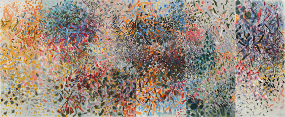
30.. No. 542 �Maountains of Palestine� 2000.
Acrylic on plyester, 72 x 172�, 189 x 437 cm.
This work is made up of 6 panels � five are 30� wide and 1 is 22� wide, They
can be hung on a corner,
31...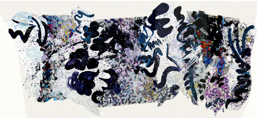
31.. No. D1860 �Big One for Bethlehem� 2003.
Acrylic on polyester, 69� x 147�, 175.25 x 373.25 cm..
This one is also in 30� sections but need to hang on one flat wall
="pointer-events:none;cursor:default;" href="http://www.art.net/">
![[Art on the Net]](/images/artnet_button.gif)